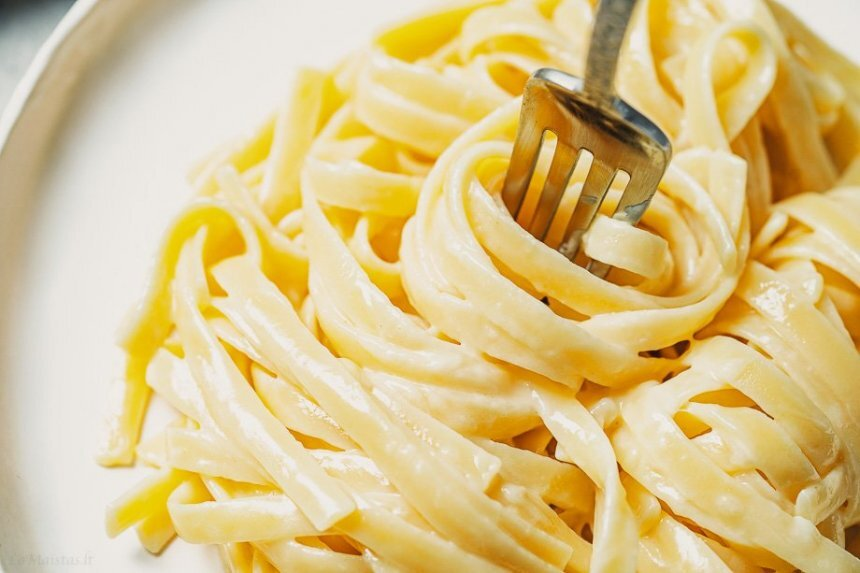

Fettuccine Alfredo makaronai su sūrio padažu
Ingredientai:
- 500 gramų fettuccine makaronų (galima keisti spagečiais, tagliatelle ar kt.)
- 200 gramų sviesto (pjaustyto kubeliais)
- 160 gramų kietojo sūrio (naudojau VILVI Memel Reserve)
Paruošimas
Paruošimo laikas: Apie 20 min.
- Sviestą supjaustome nedideliais kubeliais ir paskleidžiame vienu sluoksniu lėkštėje ar dubenėlyje, kad truputį sušiltų, kol ruošime kitus ingredientus.
- Makaronus dedame į verdantį pasūdytą vandenį. Verdame pagal instrukciją ant pakuotės iki bus al dente.
- Kol verda makaronai, kietąjį sūrį smulkiai sutarkuojame (jokiu būdu nenaudokite tarkuoto sūrio iš pakelio, nes neištirps).
- Išvirusius makaronus nukošiame (stiklinę virimo skysčio pasiliekame).
- Į ką tik nukoštus, dar garuojančius (tas labai svarbu!) makaronus dedame kubeliais pjaustytą sviestą. Greitais judesiais išmaišome, jog sviestas ištirptų
- Iškart po sviesto per 4-5 kartus sudedame kietąjį sūrį. Dedame taip - suberiame dalį, greitais judesiais truputį pamaišome, tada vėl dedame dalį, vėl greitai pamaišome ir taip iki sudėsime visą. Tada gerai išmaišome. Šis sluoksniavimas svarbus, jog sūris nesuliptų į gumulą.
- Supilame daugmaž pusę stiklinės karšto makaronų virimo skysčio ir gerai išmaišome, kad makaronai taptų kremiški. Jei norisi daugiau kremiškumo, įpilame dar šiek tiek makaronų virimo skysčio ir vėl išmaišome.
- Tiekiame iškart ir skanaujame!